#1 titlePHIÊN BẢN PATHLOSS 4.0 - THÁNG 5 NĂM 2001 BẢN DỰNG CHƯƠNG TRÌNH
#2 textCác tính năng mới sau đây được tích hợp trong bản dựng chương trình tháng 5 năm 2001:
#3 titleLƯỚI BẢN ĐỒ
#4 textMột mô-đun lưới bản đồ mới đã được giới thiệu. Mô-đun này hoạt động song song với mô-đun mạng hiện có và có chức năng giống hệt nhau. Màn hình hiển thị hỗ trợ nền ở định dạng TIF hoặc BMP của Windows và tạo mặt cắt động trên màn hình. Mô-đun lưới bản đồ có sẵn như một phần của tùy chọn nhiễu vi ba.
#5 titleTƯƠNG QUAN FADE ĐA ĐƯỜNG VÀ MƯA
#6 textBiên dự phòng fade nhiễu / suy giảm ngưỡng đã được tách thành hai thành phần riêng biệt cho mưa và đa đường. Các giá trị tương quan mặc định có thể được gán cho các trường hợp đường chính và đường nhiễu có tương quan về mặt không gian. Một trình soạn thảo tương quan được cung cấp để hiển thị đồ họa từng trường hợp nhiễu trong mô-đun mạng. Tính năng này có sẵn như một phần của tùy chọn nhiễu vi ba.
#7 titleITU-T G.826
#8 textCác tính toán hiệu suất SESR, BBER và ESR cho các đường vô tuyến SDH được thực hiện. Để đáp ứng dữ liệu vô tuyến bổ sung cần thiết cho các tính toán G.826. Định dạng của các tệp sau đã được thay đổi.
#9 list
Tệp dữ liệu Pathloss (pl4)
Tệp dữ liệu vô tuyến vi ba (raf và mrs)
Bảng tra cứu vô tuyến vi ba (mrd)
#10 textChương trình bản dựng tháng 5 năm 2001 có thể đọc các tệp dữ liệu này và tất cả các phiên bản trước đó. Các chương trình Pathloss trước bản dựng tháng 5 năm 2001 sẽ không thể đọc các tệp mới.
#11 titleCHỮ KÝ THIẾT BỊ ITU-R P.530-8 - CẢI THIỆN PHÂN TẬP
#12 textCác tính toán ngừng hoạt động chọn lọc sử dụng các tham số chữ ký thiết bị và các hệ số cải thiện phân tập không gian và tần số theo đúng P.530-8 đã được thực hiện.
#13 titleHOẠT ĐỘNG ĐỒNG KÊNH ITU-R P.530-8
#14 textSuy giảm hiệu suất do hoạt động đồng kênh cho các máy vô tuyến được trang bị thiết bị XPIC đã được thực hiện.
#15 titleLƯỚI BẢN ĐỒ
#16 titleTỔNG QUAN
#17 titleĐỊNH NGHĨA NỀN a
#18 textĐặt Thư mục
#19 textChỉ mục Tệp Hình ảnh
#20 textNhập Danh sách . 4
#21 textTệp GeoTIF 5
#22 textDanh sách Mới . . 5
#23 textMảng Bitmap TIF
#24 textChỉ mục Tệp Độ cao . . 6
#25 textNhập Danh sách . 6
#26 textChuyển đổi Tệp Độ cao
#27 textLựa chọn Datum – Ellipsoid
#28 textDatum Địa phương
#29 textDatum Toàn cầu
#30 textPhép chiếu Bản đồ . . . 8
#31 textCác Cân nhắc Khác 8
#32 titleCHẾ ĐỘ CON TRỎ
#33 textĐiều khiển Di chuyển và Thu phóng . .
#34 textCon trỏ Chế độ Liên kết
#35 titleKIỂM TRA TẦM NHÌN và TẠO MẶT CẮT 10
#36 titleHIỂN THỊ ĐỘ CAO 10
#37 titleTHÊM ĐỊA ĐIỂM và DI CHUYỂN ĐỊA ĐIỂM .
#38 titleĐỊNH NGHĨA – BẢNG THUẬT NGỮ . 12
#39 titleTÀI LIỆU THAM KHẢO 13
#40 titleTƯƠNG QUAN FADE NHIỄU VÀ ĐƯỜNG MONG MUỐN 14
#41 titleTỔNG QUAN 14
#42 titleTƯƠNG QUAN FADE KÊNH LÂN CẬN 14
#43 titleCÁC CÂN NHẮC ATPC 15
#44 titleCÀI ĐẶT CHƯƠNG TRÌNH MẶC ĐỊNH 15
#45 textCHỈNH SỬA TƯƠNG QUAN 16
#46 textMỤC TIÊU HIỆU SUẤT LỖI ITU-T G.826
#47 textTỶ LỆ LỖI BIT SESR
#48 textĐA ĐƯỜNG . 18
#49 textMƯA 18
#50 textKHÔNG KHẢ DỤNG - CHUYỂN TIẾP SESR. 18
#51 textYÊU CẦU DỮ LIỆU CHƯƠNG TRÌNH PATHLOSS . 19
#53 textBiểu mẫu Nhập Dữ liệu Vô tuyến của Bảng tính Vi ba . . . 21
#54 textBảng Tra cứu Vô tuyến . 21
#55 textCÁC YẾU TỐ CẢI THIỆN PHÂN TẬP VÀ NGỪNG HOẠT ĐỘNG CHỌN LỌC ITU P.530-8 . 21
#56 textNGỪNG HOẠT ĐỘNG DO FADE CHỌN LỌC 22
#57 textCẢI THIỆN PHÂN TẬP KHÔNG GIAN 23
#58 textCẢI THIỆN PHÂN TẬP TẦN SỐ 24
#59 textCẢI THIỆN PHÂN TẬP BỐN 24
#60 textHOẠT ĐỘNG ĐỒNG KÊNH 25
#61 textSUY GIẢM XPD DO ĐA ĐƯỜNG 25
#62 titleLƯỚI BẢN ĐỒ
#63 titleTỔNG QUAN
#64 textMột mô-đun hiển thị mạng địa điểm mới có tên "Lưới Bản đồ" đã được thêm vào trong bản dựng chương trình tháng 5 năm 2001. Mô-đun này hoạt động song song với mô-đun mạng hiện có. Mô-đun mạng sử dụng phép chiếu Transverse Mercator để hiển thị các địa điểm. Kinh tuyến gốc của phép chiếu này được đặt tại điểm giữa của phạm vi đông - tây của các địa điểm. Điều này tạo ra một màn hình hiển thị với các đường vĩ độ và kinh độ đối xứng. Nếu một địa điểm mới được thêm vào làm thay đổi phạm vi hiển thị, một kinh tuyến gốc mới sẽ được tính toán. Do đó, phép chiếu biến đổi này sẽ không hỗ trợ các nền như bản đồ và ảnh trực giao.
#65 textMô-đun lưới bản đồ sử dụng các phép chiếu cố định để hiển thị các địa điểm mạng với cả nền và độ cao. Nền có thể ở định dạng TIF hoặc bitmap cửa sổ (BMP). Độ cao phải ở định dạng Odyssey - Planet BIL. Thiết lập cơ sở dữ liệu độ cao lưới bản đồ độc lập với thiết lập cơ sở dữ liệu địa hình trong Cấu hình - Cơ sở dữ liệu địa hình. Tại thời điểm này, phải sử dụng cùng một phép chiếu cho cả nền và độ cao.
#66 titleĐỊNH NGHĨA NỀN
#67 image
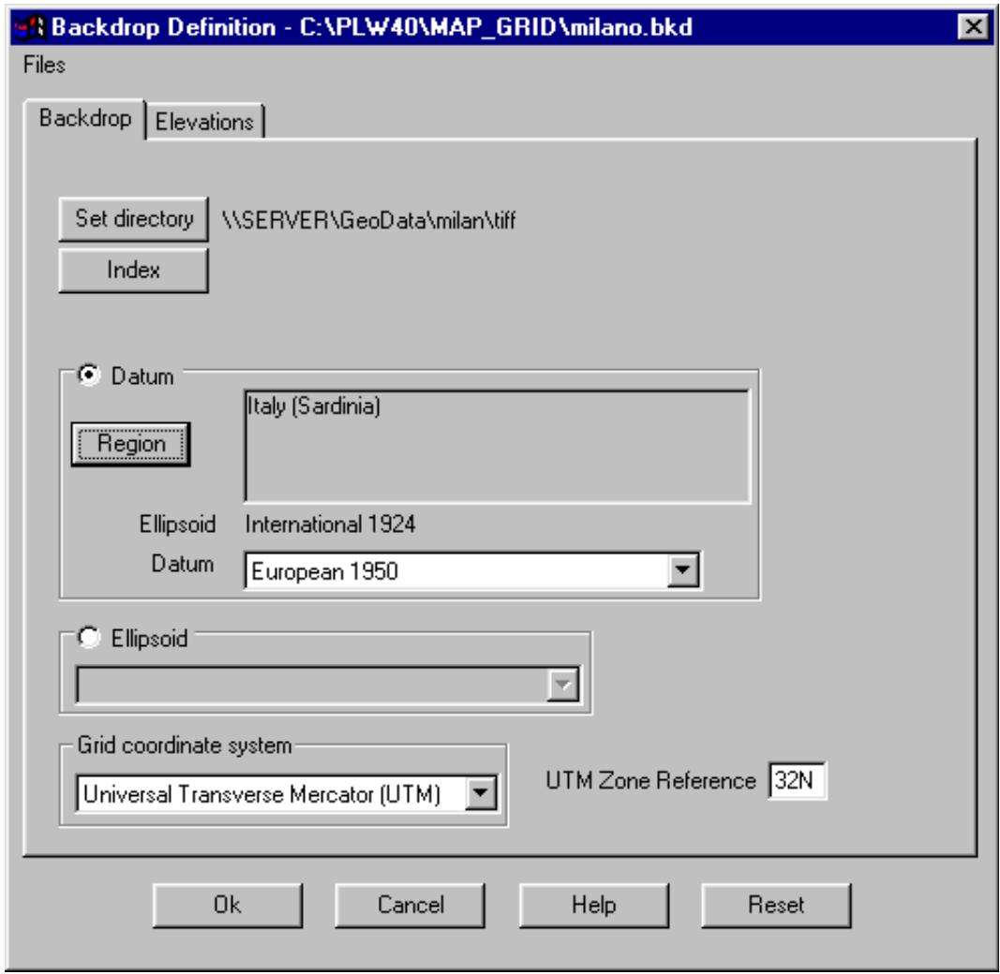
#68 textChọn Dữ liệu Địa điểm - Nền để truy cập hộp thoại định nghĩa nền. Một định nghĩa nền bao gồm
#69 textcác bước sau cho cả tệp hình ảnh và độ cao. Quy trình này giống hệt nhau cho mỗi loại.
#70 list
chỉ định thư mục chứa các tệp hình ảnh/độ cao
tạo chỉ mục cho các tệp hình ảnh/độ cao
chỉ định phép chiếu bản đồ được sử dụng bởi các tệp hình ảnh/độ cao
chỉ định datum hoặc ellipsoid tham chiếu cho các tệp hình ảnh/độ cao
#71 titleĐặt Thư mục
#72 textNhấp vào nút đặt thư mục và trỏ đến thư mục chứa các tệp hình ảnh. Tất cả các tệp hình ảnh phải nằm trong thư mục này.
#73 titleChỉ mục Tệp Hình ảnh
#74 textNhấp vào nút Chỉ mục để truy cập biểu mẫu nhập dữ liệu lưới. Các trường sau có sẵn:
#75 textTên tệp hình ảnh tối đa 95 ký tự
#76 textHiển thị bất kỳ tệp hình ảnh nào có thể tạm thời tắt
#77 textLoại Hiện tại chỉ hỗ trợ các tệp hình ảnh TIF và bitmap (bmp).
#78 textCác cạnh tây, nam, đông và bắc – Các giá trị này được biểu thị bằng km và phải tương ứng với phép chiếu bản đồ đã chọn.
#79 textKích thước ô mục nhập tùy chọn (không được sử dụng)
#80 textDữ liệu có thể được nhập thủ công bằng các quy trình được mô tả trong Vận hành Chương trình Chung hoặc được nhập từ danh sách hoặc tệp GeoTIF.
#81 titleNhập Danh sách
#82 image
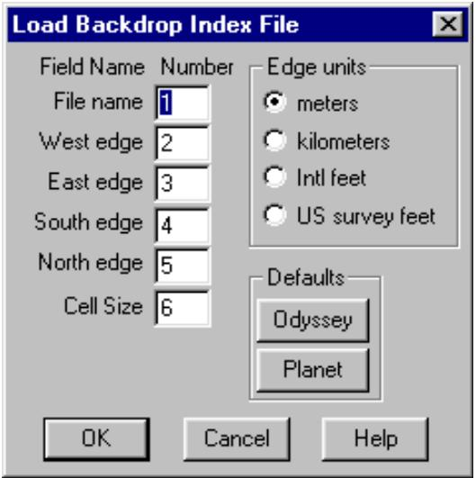
#83 textChọn Tệp – Nhập Danh sách. Chỉ định vị trí của các trường trong tệp cần nhập.
#84 textHai tùy chọn mặc định được cung cấp cho các tệp hình ảnh Planet và Odyssey.
#85 textChỉ định đơn vị của các cạnh, nhấp Ok và mở tệp chứa thông tin chỉ mục.
#86 titleTệp GeoTIF
#87 image
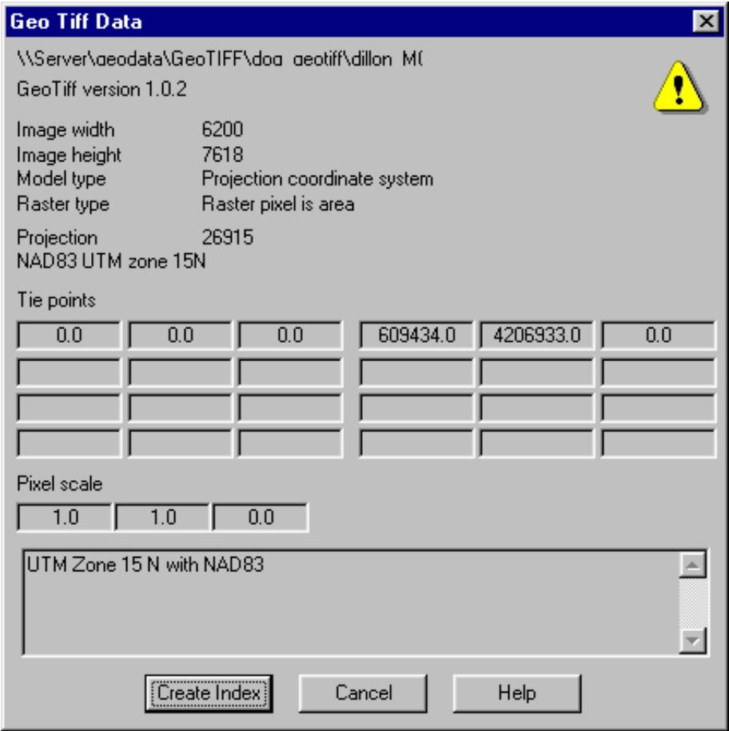
#88 textCác tệp GeoTIF có thể chứa thông tin cần thiết để tạo một mục nhập chỉ mục cho tệp. Chọn Tệp – Tệp GeoTIF và mở tệp.
#89 textPhải có đủ thông tin trong tệp để xác định các cạnh, phép chiếu bản đồ và datum.
#90 textHiện tại, chỉ các phép chiếu UTM và tọa độ Mặt phẳng Tiểu bang Hoa Kỳ mới tự động tạo chỉ mục và đặt datum.
#91 titleDanh sách Mới
#92 textCác quy trình Nhập Danh sách và Tệp GeoTIF chỉ đơn giản là thêm mục nhập mới vào chỉ mục hiện có. Chọn Tệp – Danh sách Mới để xóa danh sách hiện có.
#93 titleMảng Bitmap TIF
#94 image
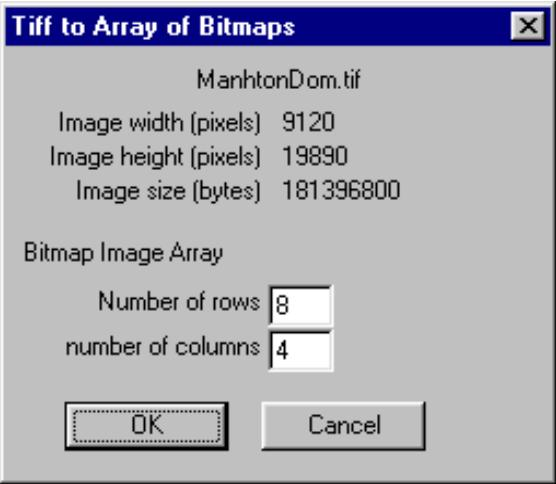
#95 textCác tệp TIF đôi khi được cung cấp với kích thước lớn trong khoảng từ 150 đến 200 megabyte hoặc lớn hơn. Trước tiên, tệp TIF phải được chuyển đổi thành bitmap. Điều này có thể rất tốn thời gian và gây áp lực lên tài nguyên hệ thống. Một điều khoản đã được đưa ra để chuyển đổi một tệp TIF lớn thành một mảng các bitmap. Các bitmap sẽ được lưu trong cùng thư mục với tệp TIF.
#96 textChọn Tệp - Tạo mảng bitmap và nhập số hàng và cột. Chỉ mục sẽ được tự động cập nhật với dữ liệu bitmap. Hãy nhớ lưu tệp nền mới.
#97 textCác bitmap không được tải vào bộ nhớ. Thay vào đó, các tệp bitmap được mở dưới dạng các tệp được ánh xạ bộ nhớ. Có thể đạt được cải thiện hiệu suất đáng kể bằng cách sử dụng một số bitmap nhỏ hơn thay vì một tệp TIF lớn duy nhất.
#98 titleChỉ mục Tệp Độ cao
#99 textNhấp vào nút Chỉ mục để truy cập biểu mẫu nhập dữ liệu lưới. Các trường sau được yêu cầu cho một mục nhập tệp độ cao:
#100 textTên bản đồ tối đa 95 ký tự
#101 textByte / pixel Một số định dạng tệp chứa độ cao và thông tin bổ sung. Mặc định là 2 byte trên mỗi pixel, tương ứng với độ cao số nguyên 2 byte.
#102 textTừ dưới lên Cài đặt này chỉ định liệu các hàng độ cao bắt đầu từ góc tây nam hay góc tây bắc. Nếu chế độ xem độ cao bị lộn ngược, hãy thay đổi cài đặt này.
#103 textThứ tự byte Độ cao được biểu thị dưới dạng số nguyên hai byte. Cài đặt này xác định liệu byte có nghĩa nhất là đầu tiên (SPARC) hay byte có nghĩa ít nhất là đầu tiên (INTEL). Nếu sử dụng sai cài đặt, độ cao thu được sẽ là các số dương và âm rất lớn. Chương trình sẽ hiểu đây là các giá trị không có dữ liệu và sẽ không có gì được hiển thị.
#104 textKích thước ô Độ phân giải ngang của cơ sở dữ liệu được biểu thị bằng mét.
#105 textCác cạnh Các cạnh tây, nam, đông và bắc. Các giá trị này được biểu thị bằng km và phải tương ứng với phép chiếu bản đồ đã chọn.
#106 textHiển thị bất kỳ tệp độ cao nào có thể tạm thời tắt
#107 textDữ liệu có thể được nhập thủ công bằng các quy trình được mô tả trong Vận hành Chương trình Chung hoặc được nhập từ một tệp danh sách.
#108 image
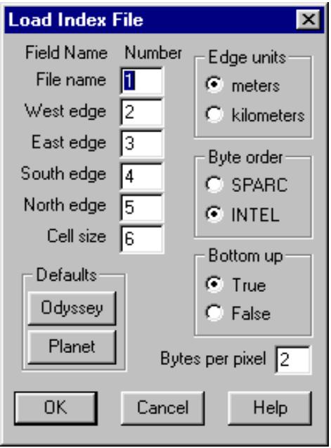
#109 titleNhập Danh sách
#110 textChọn Tệp – Nhập Danh sách. Chỉ định vị trí của các trường trong tệp cần nhập.
#111 textHai tùy chọn mặc định được cung cấp cho các tệp hình ảnh Planet và Odyssey.
#112 textChỉ định đơn vị của các cạnh, nhấp Ok và mở tệp chứa thông tin chỉ mục.
#113 titleChuyển đổi Tệp Độ cao
#114 textCác tệp độ cao phải ở định dạng Odyssey - Planet BIL. Một số tiện ích chuyển đổi tệp có sẵn để chuyển đổi các định dạng khác sang định dạng BIL.
#115 textChọn Tệp - Chuyển đổi trong menu chỉ mục Độ cao để truy cập các chuyển đổi này.
#116 titleLựa chọn Datum – Ellipsoid
#117 textHình dạng của trái đất không phải là hình cầu. Đúng hơn, nó gần giống một ellipsoid dẹt quay, còn được gọi là hình cầu dẹt. Đây là một hình elip xoay quanh trục nhỏ của nó.
#118 textTrái đất không phải là một ellipsoid chính xác. Geoid là tên được đặt cho hình dạng mà trái đất sẽ có nếu tất cả các phép đo đều được tham chiếu đến mực nước biển trung bình. Đây là một bề mặt nhấp nhô nằm trong phạm vi ±100 mét so với một ellipsoid khớp tốt. Lưu ý rằng độ cao và đường đồng mức được tham chiếu đến geoid. Vĩ độ và
#119 textkinh độ và tất cả các hệ tọa độ lưới được tham chiếu đến ellipsoid.
#120 textEllipsoid được xác định bởi bán trục lớn và bán trục nhỏ. Ngoài ra, điều này có thể được biểu thị dưới dạng bán trục lớn và độ dẹt hoặc độ lệch tâm như được xác định bởi phương trình dưới đây:
#121 interline_equation
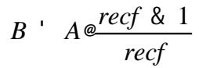
#122 texttrong đó
#123 textA trục lớn
#124 textB trục nhỏ
#125 textrecf độ dẹt nghịch đảo
#126 titleDatum Địa phương
#127 textBan đầu, các ellipsoid được khớp với bề mặt mực nước biển trung bình trên một khu vực hoặc quốc gia cụ thể. Chúng có liên quan đến một điểm ban đầu trên bề mặt trái đất để tạo ra một datum địa phương. Điểm ban đầu này được gán một vĩ độ, kinh độ, độ cao so với ellipsoid và một góc phương vị đến một điểm nào đó. Điểm ban đầu này trở thành trạm đo tam giác Principio mà tất cả các phép đo kiểm soát mặt đất sẽ được tham chiếu đến. Vĩ độ, kinh độ và độ cao của tất cả các điểm kiểm soát trong khu vực được tính toán tương đối so với điểm ban đầu này và ellipsoid.
#128 textMột ví dụ về datum địa phương là North American Datum of 1927 (NAD27) với các tham số sau:
#129 textellipsoid tham chiếu Clark 1866
#130 textbán trục lớn 6378206.4 km
#131 textđộ dẹt nghịch đảo 294.9786982
#132 textđiểm gốc Meades Ranch ở Kansas
#133 titleDatum Toàn cầu
#134 textCác datum toàn cầu sử dụng các ellipsoid được xác định từ các phương pháp khảo sát dựa trên vệ tinh và xác định một hệ tọa độ được sử dụng cho toàn bộ trái đất. Tâm của ellipsoid tham chiếu nằm tại tâm khối lượng của trái đất. Một ví dụ về datum toàn cầu là World Geodetic System of 1984 (WGS 84)
#135 textellipsoid tham chiếu WGS 84
#136 textbán trục lớn 6378137.0 km
#137 textđộ dẹt nghịch đảo 298.257223563
#138 textđiểm gốc tâm khối lượng của trái đất
#139 textTrong chương trình Pathloss, có thể chọn datum hoặc ellipsoid. Việc chọn một datum gián tiếp xác định ellipsoid tham chiếu và vì tất cả các chuyển đổi giữa tọa độ trắc địa và tọa độ hình chữ nhật cũng như các tính toán khoảng cách và góc phương vị đều dựa trên ellipsoid tham chiếu, hai lựa chọn này có vẻ như dư thừa.
#140 textMột datum trong chương trình Pathloss bao gồm dữ liệu bổ sung để cho phép chuyển đổi tọa độ trắc địa giữa các datum. Trong các datum địa phương, cần phải chia nhỏ khu vực được bao phủ bởi datum thành các vùng nhỏ hơn để cải thiện độ chính xác của việc chuyển đổi tọa độ.
#141 textMột số phép chiếu bản đồ địa phương không có datum tương ứng. Một vài ví dụ là:
#142 textLưới Quốc gia Thụy Sĩ - ellipsoid tham chiếu - Bessel 1841
#143 textLưới Quốc gia Ireland - ellipsoid tham chiếu - modified airy.
#144 textTrong những trường hợp này, phải chỉ định một ellipsoid và sẽ không có điều khoản nào để chuyển đổi tọa độ. Ví dụ, tọa độ trắc địa trong tọa độ WGS84 không thể chuyển đổi sang tọa độ Lưới Quốc gia Thụy Sĩ; tuy nhiên, tọa độ WG84 có thể được chuyển đổi sang European Datum of 1950. Lưu ý rằng trong bản dựng chương trình hiện tại, phép chiếu bản đồ và datum / ellipsoid phải được chỉ định cho cả tệp hình ảnh và tệp độ cao. Tính tổng quát này sẽ cho phép thêm tính linh hoạt trong một bản dựng trong tương lai bằng cách cho phép chuyển đổi tọa độ giữa các datum. Các lỗi trong các chuyển đổi này chắc chắn sẽ lớn hơn độ phân giải dữ liệu hình ảnh / độ cao và sẽ cần phải cung cấp các quy trình để khớp dữ liệu hình ảnh và độ cao.
#145 textViệc lựa chọn datum hoặc ellipsoid tham chiếu phải giống nhau cho dữ liệu địa điểm, tệp hình ảnh và độ cao.
#146 textPhải sử dụng cùng một phép chiếu bản đồ cho các tệp hình ảnh và độ cao
#147 titlePhép chiếu Bản đồ
#148 textChọn một trong các phép chiếu bản đồ trong danh sách thả xuống. Các phép chiếu sau hiện được hỗ trợ:
#149 textUTM - Universal Transverse Mercator - Phải chỉ định vùng UTM.
#150 textLưới Quốc gia Thụy Sĩ 1 *
#151 textLưới Ordnance Vương quốc Anh *
#152 textLưới Quốc gia Ireland *
#153 textLưới New Zealand *
#154 textGauss Kruger
#155 textLưới Mặt phẳng Tiểu bang Hoa Kỳ *
#156 textViệc chọn bất kỳ phép chiếu nào được đánh dấu bằng *, sẽ tự động chọn datum hoặc ellipsoid chính xác.
#157 textPhép chiếu mặc định giống như phép chiếu được sử dụng trong mô-đun mạng. Đây là phép chiếu Transverse Mercator được tham chiếu đến một kinh tuyến trung tâm nằm tại trung tâm của phạm vi đông - tây của các địa điểm. Lựa chọn này thực sự vô hiệu hóa tất cả các quy trình về hình ảnh và độ cao trong mô-đun Lưới Bản đồ.
#158 titleCác Cân nhắc Khác
#159 textKhi định nghĩa nền hoàn tất, hãy lưu tệp bằng menu tệp trong hộp thoại này.
#160 textNhấp OK để đóng hộp thoại định nghĩa nền. Các tệp hình ảnh được tải vào bộ nhớ và hiển thị. Nếu việc tải tệp bị hủy bỏ, thì cần phải gọi lại hộp thoại định nghĩa nền và đóng nó lại bằng nút OK.
#161 textTệp định nghĩa nền hiện tại sẽ được tự động tải lại khi chương trình được khởi động lại và
#162 textmô-đun lưới bản đồ được nhập.
#163 textNếu một tệp mạng có phạm vi cách xa 10 độ so với phạm vi của dữ liệu hình ảnh được tải, thì phép chiếu bản đồ sẽ tự động được đặt thành mặc định và các tính năng hình ảnh và độ cao bị vô hiệu hóa.
#164 titleCHẾ ĐỘ CON TRỎ
#165 titleĐiều khiển Di chuyển và Thu phóng
#166 textNhấp vào nút để đặt con trỏ ở chế độ di chuyển. Giữ nút chuột trái và kéo màn hình đến vị trí mới. Màn hình cũng có thể được di chuyển bằng các phím con trỏ bất kỳ lúc nào.
#167 textNhấp vào nút để đặt con trỏ ở chế độ thu phóng. Nhấp chuột trái sẽ phóng to màn hình một lượng đặt trước và căn giữa màn hình tại vị trí con trỏ. Nhấp chuột phải sẽ thu nhỏ và căn giữa màn hình. Để thu phóng một khu vực cụ thể, giữ nút chuột trái và kéo chuột để xác định khu vực mong muốn. Ba nút bổ sung ảnh hưởng đến màn hình như sau:
#168 image
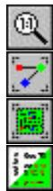
#169 texthình ảnh nền được hiển thị từ góc trên bên trái với cùng độ phân giải như tệp hình ảnh.
#170 textphạm vi của dữ liệu địa điểm được hiển thị
#171 textphạm vi của các tệp hình ảnh được hiển thị.
#172 textchế độ xem độ cao được tắt và bật bằng cách nhấp vào nút này
#173 titleCon trỏ Chế độ Liên kết
#174 textNhấp vào nút để đặt con trỏ ở chế độ liên kết. Đây là chế độ con trỏ mặc định trong mô-đun mạng và được sử dụng để truy cập các mô-đun thiết kế, tạo liên kết giữa hai địa điểm và đặt chọn lọc các thuộc tính liên kết và địa điểm.
#175 titleKIỂM TRA TẦM NHÌN và TẠO MẶT CẮT
#176 textNhấp vào nút để bắt đầu kiểm tra tầm nhìn. Đặt con trỏ tại một vị trí, giữ nút chuột trái và kéo chuột đến vị trí thứ hai. Tiến trình của mặt cắt được hiển thị động trên
#177 chart
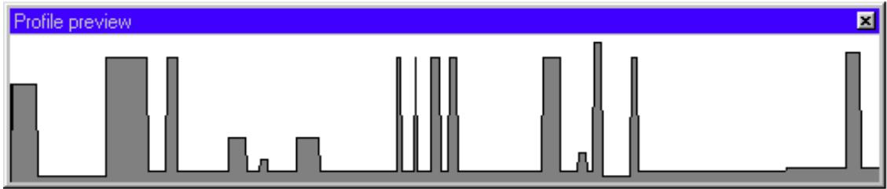
#178 textmàn hình. Để đặt lại màn hình này trong quá trình tạo mặt cắt, nhấp chuột phải. Khi nút chuột trái được thả ra, một màn hình phân tích mặt cắt sẽ xuất hiện. Màn hình này cho phép bạn thay đổi chiều cao ăng-ten, hệ số bán kính trái đất K và kiểm tra độ hở bằng cách sử dụng các tham chiếu vùng Fresnel của màn hình độ hở.
#179 chart
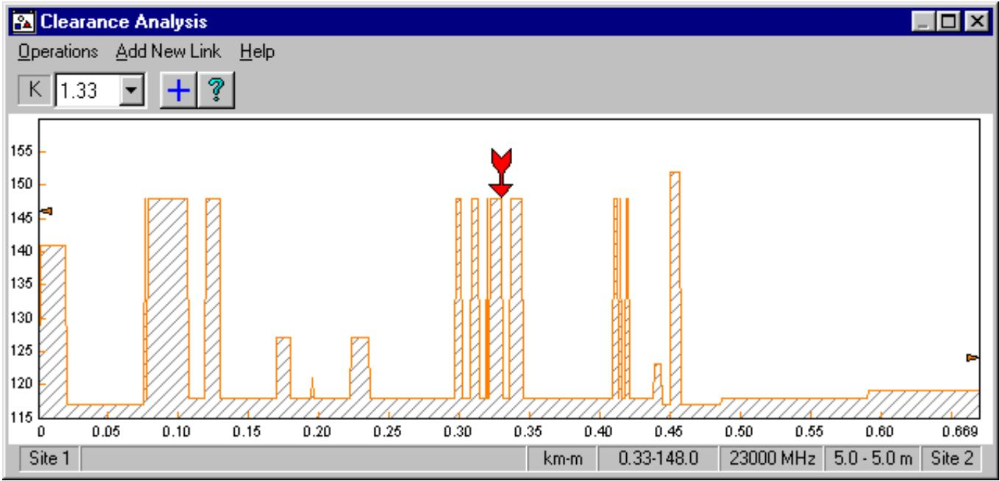
#180 textBạn có thể thêm liên kết này vào danh sách dữ liệu địa điểm và lưu dữ liệu dưới dạng tệp Pathloss pl4. Nếu hai vị trí đầu cuối không nằm giữa các địa điểm hiện có, bạn nên thay đổi tên địa điểm từ tên mặc định Địa điểm 1 và Địa điểm 2. Để thoát khỏi chế độ tạo mặt cắt, hãy đóng màn hình xem trước mặt cắt, nhấp lại vào nút hoặc thay đổi chế độ con trỏ sang chế độ di chuyển, thu phóng hoặc liên kết.
#181 titleHIỂN THỊ ĐỘ CAO
#182 textMột màn hình hiển thị độ cao có thể được tạo ở bất kỳ mức thu phóng nào để phủ lên nền hình ảnh. Phạm vi hiển thị luôn tương ứng với phạm vi hiển thị hiện tại.
#183 textChọn Dữ liệu Địa điểm – Chế độ xem độ cao - Tạo
#184 image
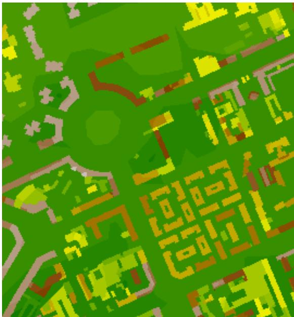
#185 textMàn hình hiển thị này hữu ích để giải quyết các khác biệt nhỏ về độ cao có thể không rõ ràng từ màn hình hình ảnh.
#186 textChú giải độ cao có sẵn trong cùng menu.
#187 textMàn hình hiển thị độ cao sẽ duy trì cho đến khi nó được đặt lại.
#188 textMột số tùy chọn hiển thị có sẵn. Chọn Độ cao - Xem - Tùy chọn
#189 image
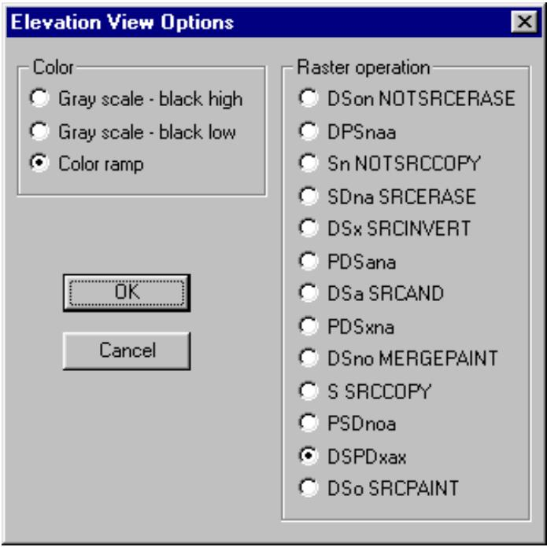
#190 textMàu sắc có thể là một dải màu chuyển tiếp hoặc thang màu xám. Màn hình hiển thị độ cao được phủ lên màn hình nền. Mã hoạt động raster là SRCCOPY trong hình vẽ trên, mã này ẩn nền. Mã "DSPDxax" là một bản sao trong suốt cho phép nền hiển thị xuyên qua. Nếu sử dụng bất kỳ mã nào khác ngoài SRCCOPY, màu sắc của chú giải độ cao sẽ không chính xác.
#191 titleTHÊM ĐỊA ĐIỂM và DI CHUYỂN ĐỊA ĐIỂM
#192 textHai thao tác tương tự cho phép người dùng thêm trực quan một địa điểm mới hoặc di chuyển một địa điểm hiện có. Chọn Dữ liệu Địa điểm – Thêm Địa điểm hoặc Di chuyển Địa điểm
#193 image
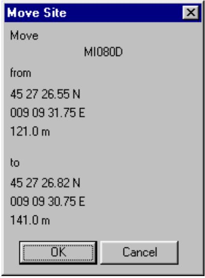
#194 image
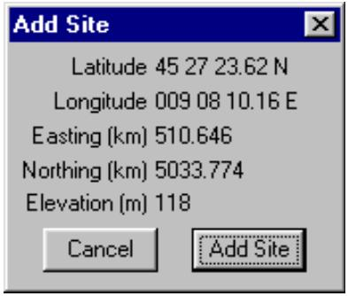
#195 textTrong trường hợp thêm địa điểm, hãy sử dụng chuột để định vị điểm đánh dấu tại vị trí mong muốn.
#196 textNhấp vào nút Thêm địa điểm và nhập tên cho địa điểm.
#197 textTrong trường hợp di chuyển địa điểm, trước tiên hãy xác định địa điểm cần di chuyển bằng cách nhấp chuột trái vào chú giải địa điểm. Sau đó di chuyển địa điểm đến vị trí mới và nhấp vào nút Ok.
#198 textCả hai màn hình hiển thị đều hiển thị độ cao.
#199 titleĐỊNH NGHĨA – BẢNG THUẬT NGỮ
#200 textDatum – Bất kỳ đại lượng số hoặc hình học nào hoặc tập hợp các đại lượng như vậy chỉ định hệ tọa độ tham chiếu được sử dụng để kiểm soát trắc địa trong tính toán tọa độ của các điểm trên trái đất. Datum có thể có phạm vi toàn cầu hoặc địa phương. Một datum địa phương xác định một hệ tọa độ chỉ được sử dụng trên một khu vực có phạm vi hạn chế. Một datum toàn cầu chỉ định tâm của ellipsoid tham chiếu nằm tại tâm khối lượng của trái đất và xác định một hệ tọa độ được sử dụng cho toàn bộ trái đất.
#201 textEllipsoid – Bề mặt được tạo ra bởi một hình elip xoay quanh một trong các trục của nó.
#202 textTọa độ Địa tâm – Tọa độ Descartes (X, Y, Z) xác định vị trí của một điểm so với tâm khối lượng của trái đất.
#203 textTọa độ Trắc địa – Các đại lượng vĩ độ và kinh độ xác định vị trí của một điểm trên bề mặt trái đất so với ellipsoid tham chiếu. Còn được gọi không chính xác là tọa độ địa lý.
#204 textĐộ cao Trắc địa – Độ cao so với ellipsoid tham chiếu, được đo dọc theo pháp tuyến ellipsoid đi qua điểm đang xét. Độ cao trắc địa là dương nếu điểm nằm bên ngoài ellipsoid. Còn được gọi là độ cao ellipsoid, h.
#205 textVĩ độ Trắc địa – Góc giữa mặt phẳng xích đạo và pháp tuyến của ellipsoid đi qua điểm tính toán. Vĩ độ trắc địa dương về phía bắc của xích đạo và âm về phía nam của xích đạo.
#206 textKinh độ Trắc địa – Góc giữa mặt phẳng của một kinh tuyến và mặt phẳng của kinh tuyến gốc. Kinh độ có thể được đo bằng góc tạo thành giữa kinh tuyến địa phương và kinh tuyến gốc tại cực quay của ellipsoid tham chiếu, hoặc bằng cung dọc theo xích đạo bị chặn bởi các kinh tuyến này.
#207 textGeoid – Bề mặt đẳng thế của trường trọng lực trái đất được xấp xỉ bằng mực nước biển trung bình không bị xáo trộn của các đại dương. Hướng của trọng lực đi qua một điểm nhất định trên geoid vuông góc với bề mặt đẳng thế này.
#208 textPhân tách Geoid – Khoảng cách giữa geoid và ellipsoid tham chiếu toán học được đo dọc theo pháp tuyến ellipsoid. Khoảng cách này là dương bên ngoài, hoặc âm bên trong, ellipsoid tham chiếu. Còn được gọi là độ cao geoid; sự nhấp nhô của geoid.
#209 textDatum Ngang – Một datum ngang chỉ định hệ tọa độ trong đó vĩ độ và kinh độ của các điểm được xác định. Vĩ độ và kinh độ của một điểm ban đầu, góc phương vị của một đường từ điểm đó, và bán trục lớn và độ dẹt của ellipsoid xấp xỉ bề mặt trái đất trong khu vực quan tâm xác định một datum ngang.
#210 textEllipsoid Tham chiếu – Một ellipsoid có kích thước gần đúng với kích thước của geoid; kích thước chính xác được xác định bởi các cân nhắc khác nhau của phần bề mặt trái đất có liên quan. Thường là một ellipsoid quay hai trục.
#211 textDatum Dọc – Một datum dọc là bề mặt mà các độ cao được tham chiếu đến. Một datum dọc địa phương là một bề mặt liên tục, thường là mực nước biển trung bình, tại đó các độ cao được giả định bằng không trong suốt khu vực
#212 textquan tâm.
#213 textWGS 72 – World Geodetic System 1972. WGS 72 là hệ thống trắc địa thế giới tiêu chuẩn địa tâm, gắn với trái đất trước đây của DoD. Nó đã được thay thế bởi WGS 84
#214 textWGS 84 – World Geodetic System 1984. Một hệ thống trắc địa thế giới cung cấp khung tham chiếu cơ bản, hình dạng hình học và mô hình trọng lực cho trái đất, và cung cấp phương tiện để liên hệ các vị trí trên các hệ thống trắc địa địa phương khác nhau với một hệ tọa độ địa tâm, gắn với trái đất. WGS 84 là hệ thống trắc địa thế giới tiêu chuẩn địa tâm, gắn với trái đất hiện tại của DoD.
#215 titleTÀI LIỆU THAM KHẢO
#216 list
(1) Topographic Engineering Center, TEC-SR-7, Sổ tay chuyển đổi DATUMS, PHÉP CHIẾU, LƯỚI VÀ CÁC HỆ TỌA ĐỘ THÔNG DỤNG, tháng 1 năm 1996. (2) Bộ Quốc phòng, MIL-HDBK-850, Sổ tay Quân sự – Bảng thuật ngữ về Bản đồ, Biểu đồ và
Thuật ngữ Trắc địa, ngày 21 tháng 1 năm 1994. Pathloss 4.0
#217 titleTỔNG QUAN
#218 titleNếu tín hiệu gây nhiễu đi theo cùng một đường với tín hiệu mong muốn, hai tín hiệu có thể được coi là có tương quan ở một mức độ nào đó. Tín hiệu gây nhiễu sẽ bị fading cùng lúc với tín hiệu mong muốn; do đó làm giảm tác động của nhiễu.
#219 image
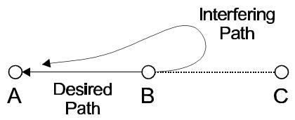
#220 textĐây là trường hợp cho cả fading mưa và đa đường; tuy nhiên, mức độ tương quan cho hai điều kiện này sẽ khác nhau. Trong trường hợp fading đa đường, người ta thực tế cho rằng chỉ có một fade tồn tại tại bất kỳ thời điểm nào trong một khu vực do đặc điểm của fading sâu. Fading đa đường có thời gian ngắn và có tính định vị cao trong một khu vực. Mặt khác, fading mưa có thời gian dài hơn, tương đối độc lập với tần số trong một băng tần nhất định và có thể mở rộng trên một khu vực rộng.
#221 textĐể xử lý sự tương quan fade này, bản dựng chương trình tháng 5 năm 2001 xem xét biên dự phòng fade nhiễu và suy giảm ngưỡng Không tương quan Không gian cho cả mưa và đa đường một cách riêng biệt dưới giả định rằng fading mưa và đa đường là các sự kiện loại trừ lẫn nhau.
#222 image
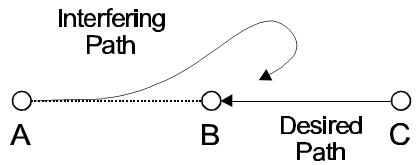
#223 textCó điều khoản để chỉnh sửa tương quan fade mưa - đa đường và gán các giá trị mặc định cho tương quan này khi bắt đầu tính toán nhiễu.
#225 image
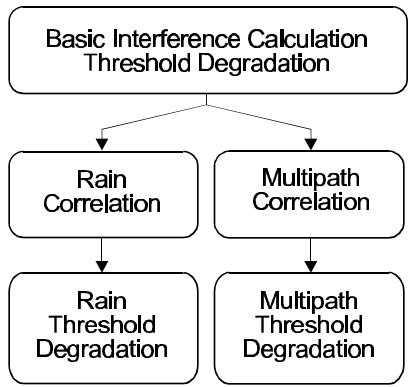
#226 textTính toán nhiễu cơ bản luôn được thực hiện và giữ lại. Ảnh hưởng của tương quan mưa và đa đường không làm thay đổi tính toán cơ bản.
#227 textMột ví dụ về fade tương quan sẽ là một hệ thống kế hoạch tần số hai kênh đa chặng với các địa điểm được chỉ định là A, B và C. Máy thu tại địa điểm A có máy phát liên kết nằm tại địa điểm B, sẽ bị nhiễu bởi máy phát cũng tại địa điểm B truyền đến địa điểm C. Tỷ lệ sóng mang trên nhiễu hoàn toàn được xác định bởi tỷ lệ trước/sau của ăng-ten phát gây nhiễu. Vì cả tín hiệu mong muốn và tín hiệu gây nhiễu đều đi theo đường từ B đến A, các cân nhắc sau đây có thể được đưa ra.
#230 list
Mưa sẽ làm suy hao tín hiệu mong muốn và tín hiệu gây nhiễu như nhau nếu phân cực giống nhau cho cả hai tín hiệu. Phân cực của tín hiệu gây nhiễu là không xác định ngoài hướng ngắm và có thể được coi là tròn ở các góc phân biệt lớn hơn 90 độ. Do đó, fading có thể được coi là hoàn toàn tương quan và trường hợp này có thể được bỏ qua.
Mức độ tương quan giữa các fade tín hiệu mong muốn và tín hiệu gây nhiễu do đa đường sẽ phụ thuộc vào chiều cao ăng-ten của các máy phát mong muốn và gây nhiễu tại địa điểm B. Phân cực sẽ ảnh hưởng đến tương quan ở mức độ thấp hơn. Đối với chiều cao ăng-ten bằng nhau, fading có thể được coi là tương quan; nếu không, một tình huống tương quan một phần tồn tại. TƯƠNG QUAN FADE KÊNH LÂN CẬN
#231 titleHệ thống một cho N là một trường hợp chuyên biệt của tương quan. Từ quan điểm đa đường, sự khác biệt tần số giữa tín hiệu mong muốn và bộ gây nhiễu kênh lân cận đủ nhỏ để cung cấp một số tương quan fading đa đường. Sự tương quan này kết hợp với cải thiện bộ lọc thường đủ để giải quyết trường hợp này. Ở các khoảng cách tần số từ hai kênh lân cận trở lên, cải thiện bộ lọc đủ để bỏ qua nhiễu.
#232 textPathloss 4.0
#234 textCÁC CÂN NHẮC ATPC
#235 titleMột báo cáo chi tiết nhiễu hiển thị tỷ lệ sóng mang trên nhiễu. Trước bản dựng tháng 5 năm 2001, C/I luôn được tính toán với tín hiệu thu ở công suất tối đa và tín hiệu gây nhiễu ở công suất tối thiểu khi ATPC được chỉ định. Việc tính toán C đến I hiện phụ thuộc vào tương quan không gian như sau: Không tương quan tín hiệu thu tối thiểu - tín hiệu gây nhiễu tối thiểu
#236 textTương quan tín hiệu thu tối thiểu - tín hiệu gây nhiễu tối đa
#237 textCÀI ĐẶT CHƯƠNG TRÌNH MẶC ĐỊNH
#238 titleKhi bắt đầu tính toán nhiễu, các giá trị tương quan mặc định có thể được gán cho phép tính. Trong mô-đun Mạng, chọn - Nhiễu - Tính Nội bộ để hiển thị hộp thoại nhiễu.
#239 textNhấp vào nút Tùy chọn Tương quan để đặt các giá trị mặc định. Bốn loại tương quan có sẵn bao gồm không tương quan cho cả đa đường và mưa. Người dùng có thể chọn bỏ qua nhiễu hoặc chỉ định một giá trị cho tương quan. Hãy nhớ rằng bất kỳ cài đặt nào ở đây không ảnh hưởng đến tính toán cơ bản.
#240 image
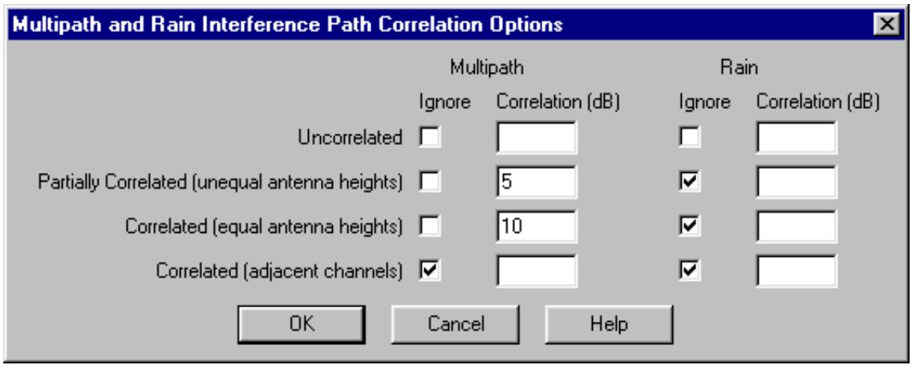
#241 textPathloss 4.0
#242 titleTương quan có thể được chỉnh sửa theo từng trường hợp trong hộp thoại Sửa đổi Tham số Nhiễu. Có thể truy cập hộp thoại này từ báo cáo chi tiết trường hợp trong menu lựa chọn Sửa đổi. Chiều cao ăng-ten được hiển thị dưới các ký hiệu: itx máy phát gây nhiễu atx máy phát địa điểm lân cận nạn nhân
#243 image
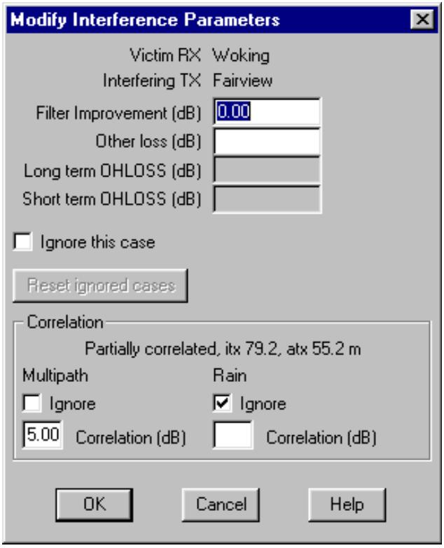
#244 textTương quan cũng có thể được chỉnh sửa trực tiếp trong màn hình Mạng. Chọn Nhiễu - Chỉnh sửa Tương quan. Cách tổ chức giống như cách được sử dụng trong báo cáo chi tiết trường hợp. Mỗi máy thu là một trường hợp. Mỗi bộ gây nhiễu vào máy thu đó là một trường hợp con. Đường nhiễu được hiển thị trên màn hình mạng, giúp gán các giá trị cho tương quan. Các mũi tên bên trái thay đổi máy thu (trường hợp) và các mũi tên bên phải thay đổi máy phát gây nhiễu (trường hợp con)
#245 textCác tần số và phân cực được hiển thị cùng với chiều cao ăng-ten sử dụng cùng một danh pháp như được mô tả ở trên. Ngoài ra, các tham số sau được đưa ra:
#246 textv-i độ dài đường nạn nhân đến bộ gây nhiễu ang góc phân biệt tại máy thu nạn nhân
#251 textphép người dùng chuyển đến một số trường hợp cụ thể. Báo cáo tham chiếu chéo có thể được sử dụng như một chỉ mục tổng thể Pathloss 4.0
#252 titleITU-T G.826 xác định hiệu suất của các hệ thống vô tuyến SDH theo các tham số sau.
#253 textTỷ lệ Giây Bị Lỗi Nghiêm trọng Vô tuyến (SESR)
#254 textTỷ lệ Lỗi Khối Nền (BBER)
#255 textTỷ lệ Giây Bị Lỗi (ESR)
#256 textPhần này mô tả việc thực hiện khuyến nghị này trong Pathloss.
#257 textTỶ LỆ LỖI BIT SESR
#258 titleTỷ lệ lỗi bit đã sửa đổi trước tiên được xác định như sau:
#259 textGiá trị của \mathrm {B E R} _ { \mathrm {S E S} } sẽ nằm giữa BER { { 1 0 } ^ { - 3 } } và { { 1 0 } ^ { - 6 } }. Xác định mức ngưỡng RX tại \mathrm {B E R} _ { \mathrm {S E S} } như sau:
#260 interline_equation
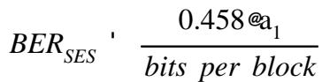
#261 table
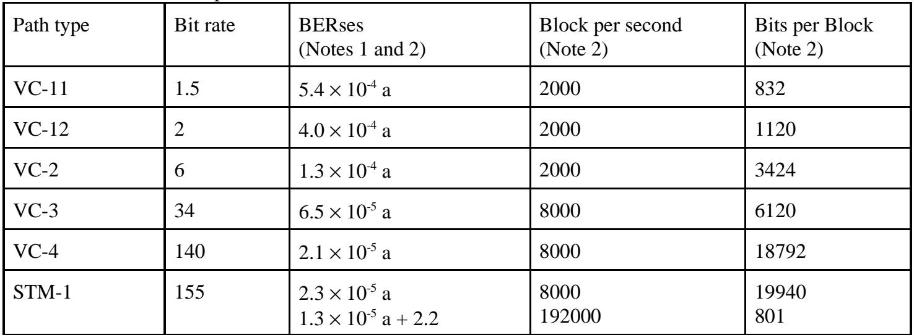
#262 textPathloss 4.0
#263 interline_equation
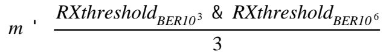
#264 interline_equation
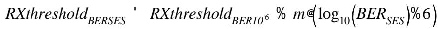
#265 titleTỷ lệ giây bị lỗi nghiêm trọng là xác suất fading đa đường trong tháng xấu nhất tại ngưỡng máy thu \mathrm {B E R} _ { \mathrm {S E S} }.
#266 textXác định xác suất fading trong tháng xấu nhất tại mức ngưỡng thu tỷ lệ lỗi bit dư. RBER (tỷ lệ lỗi bit dư) nằm trong khoảng từ 1 × 10-10 đến 1 × 10-13 . 1 \times1 0 ^ {- 1 0}\mathrm {t o} 1 \times1 0 ^ {- 1 3}
#267 interline_equation
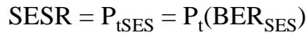
#268 textTính độ dốc của đường cong phân bố BER trên thang log - log cho BER trong khoảng \mathrm {B E R} _ { \mathrm {S E S} } đến RBER
#269 interline_equation
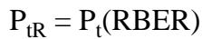
#270 textTỷ lệ lỗi khối nền (BBER) sau đó được đưa ra bởi:
#271 interline_equation
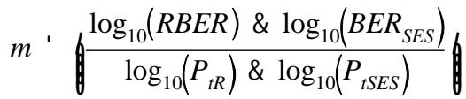
#272 texttrong đó
#273 interline_equation
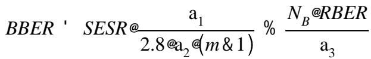
#274 text{\bf a} _ {1} 10 đến 30, số lỗi trên mỗi cụm cho BER trong khoảng từ 1 \times {1 0} ^ {- 3} đến \mathrm {B E R} _ { \mathrm {S E S} }
#275 text{\bf a} _ {2} 1 đến 10, số lỗi trên mỗi cụm cho BER trong khoảng từ \mathrm {B E R} _ { \mathrm {S E S} } đến RBER
#276 text{ \bf {a} } _ { 3 } 1, số lỗi trên mỗi cụm cho BER thấp hơn RBER
#277 text\mathrm{ N _ {B} } số bit trên mỗi khối từ bảng trên
#278 textTỷ lệ giây bị lỗi (ESR) được đưa ra bởi:
#279 texttrong đó
#280 interline_equation
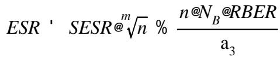
#281 textn số khối trên giây từ bảng trên
#282 textMƯA
#283 titleTính toán tính không khả dụng do mưa, \mathrm{ P _ {a R} } trong tháng xấu nhất tại mức ngưỡng máy thu \mathrm {B E R} _ { \mathrm {S E S} }. Các giá trị BBER và ESR cho mưa thu được bằng cách thay thế \mathrm{ P _ {a R} } cho SESR trong tính toán đa đường.
#284 textKHÔNG KHẢ DỤNG - CHUYỂN TIẾP SESR.
#285 titleITU-T G.826 coi thời gian không khả dụng là sự tích lũy của tất cả các trạng thái SES kéo dài hơn 10 giây liên tiếp. Thời gian SESR là sự tích lũy của tất cả các trạng thái SES kéo dài dưới 10 giây liên tiếp. Người ta cho rằng fading mưa sẽ luôn kéo dài hơn 10 giây liên tiếp và do đó fading mưa được phân loại là không khả dụng. ITU-R P.530-8 nói rằng fading đa đường sẽ luôn nhỏ hơn 10 giây liên tiếp và do đó sẽ được phân loại là giây bị lỗi nghiêm trọng. Theo định nghĩa này, fading mưa được gán cho tình trạng không khả dụng và fading đa đường được gán cho SESR.
#286 textPathloss 4.0
#287 textYÊU CẦU DỮ LIỆU CHƯƠNG TRÌNH PATHLOSS
#288 titleDữ liệu vô tuyến bổ sung sau đây được yêu cầu để tính toán hiệu suất lỗi G.826:
#289 texttỷ lệ lỗi bit dư
#290 textNgưỡng RX tại tỷ lệ lỗi bit dư
#291 textNgưỡng RX tại tỷ lệ lỗi bit { { 1 0 } ^ { - 3 } }
#292 textTỷ lệ lỗi bit SES (tùy chọn - có thể được chương trình tính toán)
#293 textNgưỡng RX tại tỷ lệ lỗi bit SES (tùy chọn - có thể được chương trình tính toán)
#294 text{\bf a} _ {1} - số lỗi trên mỗi cụm cho BER trong khoảng từ 1 \times {1 0} ^ {- 3} đến { \mathrm {B E R} } _ { \mathrm {S E S} } .
#295 text{\bf a} _ {2} - số lỗi trên mỗi cụm cho BER trong khoảng từ \mathrm {B E R} _ { \mathrm {S E S} } đến RBER
#296 text{ \bf {a} } _ { 3 } - số lỗi trên mỗi cụm cho BER thấp hơn RBER
#297 textsố bit trên mỗi khối
#298 textsố khối trên giây
#299 textDữ liệu vô tuyến bổ sung sau đây được yêu cầu để tính toán xác suất fade chọn lọc sử dụng chữ ký thiết bị thay vì biên dự phòng fade tán xạ.
#300 textđộ trễ chữ ký (nanô giây)
#301 textchiều rộng chữ ký (MHz)
#302 textđộ sâu chữ ký - pha tối thiểu (dB)
#303 textđộ sâu chữ ký - pha không tối thiểu (dB)
#304 textCác tham số sau đã được thêm vào để xử lý các tính toán hiệu suất P.530-8 cho hoạt động đồng kênh sử dụng thiết bị XPIC và kết hợp IF trên các hệ thống phân tập không gian:
#305 textđộ lợi bộ kết hợp IF (dB)
#306 texthệ số cải thiện fading chọn lọc của bộ kết hợp IF
#307 textXPIF - hệ số cải thiện phân cực chéo
#308 text\mathrm {X P D} _ { \mathrm {X P I C} } - phân biệt phân cực chéo của thiết bị XPIC.
#310 titleĐể đáp ứng các yêu cầu dữ liệu mới này, các định dạng tệp dữ liệu vô tuyến đã được mở rộng với các mục nhập mới sau đây và một số tùy chọn thiết bị / tính toán.
#311 textDIGRADIO_TYPE SDH // PDH, SDH hoặc NB_DIGITAL băng hẹp kỹ thuật số
#312 textSD_OPERATION IFC // BBS hoặc IFC chuyển mạch băng gốc hoặc bộ kết hợp IF
#313 textCOCHANNEL_OPERATION YES // YES hoặc NO
#314 textUSE_SIGNATURE
#315 textYES // YES hoặc NO sử dụng chữ ký thiết bị XPIF 17 // Hệ số cải thiện XPD đồng kênh
#316 textPathloss 4.0
#317 code
Các từ ghi nhớ mới có thể được đặt ở bất kỳ đâu trong tệp sau tiêu đề và trước dữ liệu đường cong. Cho phép các dòng trống và các nhận xét bắt đầu bằng dấu gạch chéo kép //.
#318 textMột số tùy chọn thiết bị / tính toán đã được bao gồm:
#319 textDIGRADIO_TYPE SDH
#320 titleCác giá trị cho phép là PDH, SDH hoặc NB_DIGITAL (băng hẹp kỹ thuật số). Các tùy chọn này chỉ ảnh hưởng đến định dạng của các biểu mẫu nhập dữ liệu trong bảng tính vi ba. Ví dụ: dữ liệu chữ ký hoặc biên dự phòng fade tán xạ không thể truy cập được với loại vô tuyến NB_DIGITAL được đặt.
#321 textSD_OPERATION
#322 titleCác giá trị cho phép là IFC cho kết hợp IF và BBS cho chuyển mạch băng gốc. Tùy chọn này tự động đặt tính toán cải thiện phân tập không gian thành kết hợp IF hoặc chuyển mạch băng gốc. Giá trị mặc định là chuyển mạch băng gốc.
#323 textCOCHANNEL_OPERATION
#324 titleCác giá trị cho phép là YES hoặc NO. Điều này đặt tùy chọn hoạt động đồng kênh trong hộp thoại Tùy chọn Độ tin cậy. Giá trị mặc định là NO.
#325 textUSE_SIGNATURE
#326 titleCác tùy chọn cho phép là YES cho các tính toán fading chọn lọc sử dụng chữ ký thiết bị hoặc NO để sử dụng biên dự phòng fade tán xạ và hệ số xuất hiện fade tán xạ. Lưu ý rằng tùy chọn này có tác dụng tính toán cải thiện phân tập theo đúng P.530-8.
#327 textPathloss 4.0
#328 titleTất cả dữ liệu vô tuyến mới có thể được truy cập trong các biểu mẫu nhập dữ liệu vô tuyến trong bảng tính vi ba. Định dạng của các biểu mẫu này đã được sửa đổi để bao gồm tất cả dữ liệu mới.
#329 textBảng Tra cứu Vô tuyến
#330 titleTất cả dữ liệu vô tuyến được bao gồm trong một mục nhập tra cứu; tuy nhiên, các mục dữ liệu sau không thể chỉnh sửa:
#331 texttỷ lệ lỗi bit dư
#332 textNgưỡng RX tại tỷ lệ lỗi bit dư
#333 textNgưỡng RX tại tỷ lệ lỗi bit { { 1 0 } ^ { - 3 } }
#334 textTỷ lệ lỗi bit SES (tùy chọn - có thể được chương trình tính toán)
#335 textNgưỡng RX tại tỷ lệ lỗi bit SES (tùy chọn - có thể được chương trình tính toán)
#336 text{\bf a} _ {1} - số lỗi trên mỗi cụm cho BER trong khoảng từ 1 \times {1 0} ^ {- 3} đến \operatorname {B E R} _ { \operatorname {S E S} } .
#337 text{\bf a} _ {2} - số lỗi trên mỗi cụm cho BER trong khoảng từ \mathrm {B E R} _ { \mathrm {S E S} } đến RBER
#338 text{ \bf {a} } _ { 3 } - số lỗi trên mỗi cụm cho BER thấp hơn RBER
#339 textsố bit trên mỗi khối
#340 textsố khối trên giây
#341 textđộ lợi bộ kết hợp IF (dB)
#342 texthệ số cải thiện fading chọn lọc của bộ kết hợp IF
#343 textXPIF - hệ số cải thiện phân cực chéo
#344 text\mathrm {X P D} _ { \mathrm {X P I C} } - phân biệt phân cực chéo của thiết bị XPIC Nếu một bảng tra cứu được sử dụng cho hoạt động G.826, thì
#345 textdữ liệu phải được nhập từ một tệp dữ liệu vô tuyến. Để tạo một mục nhập vô tuyến mới tương tự như một mục hiện có, hãy nhấp chuột trái vào mục tương tự trên cột bên trái. Số mục sẽ chuyển sang màu đỏ. Sau đó chọn Chỉnh sửa - Thêm và thực hiện các thay đổi cần thiết đối với phần hiển thị của dữ liệu. Mục nhập mới sẽ chứa các giá trị dữ liệu ẩn giống nhau.
#346 image
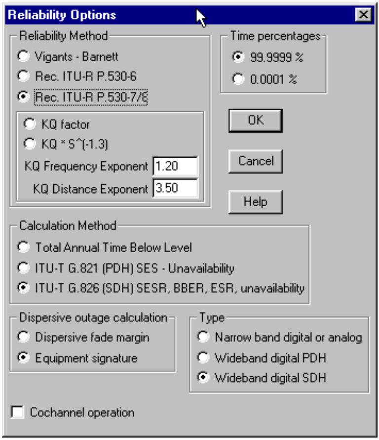
#347 textPathloss 4.0
#348 titleCác tùy chọn Độ tin cậy bao gồm một lựa chọn để sử dụng biên dự phòng fade tán xạ hoặc chữ ký thiết bị cho các tính toán ngừng hoạt động do tán xạ.
#349 textNếu tùy chọn chữ ký thiết bị được chọn, tất cả cải thiện phân tập (không gian, tần số và bốn) sẽ được thực hiện theo P.530-8.
#350 textCác chi tiết cụ thể của từng tính toán được đưa ra trong các phần sau.
#351 textNGỪNG HOẠT ĐỘNG DO FADE CHỌN LỌC
#352 titleXác suất ngừng hoạt động được định nghĩa là xác suất BER vượt quá một ngưỡng nhất định như được xác định bởi BER của dữ liệu chữ ký.
#353 texttrong đó
#354 interline_equation
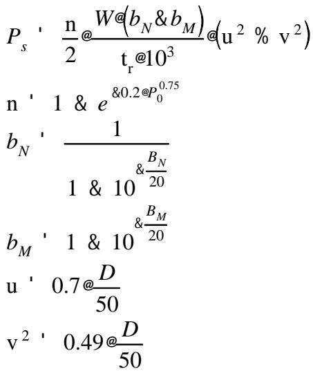
#355 text\mathrm{ \DeltaB _ {N} } độ sâu chữ ký pha không tối thiểu
#359 text\mathfrak {t} _ { \mathrm {r} } độ trễ tham chiếu (ns)
#360 text\mathbf {u} thời gian trễ tiếng vang trung bình (ns)
#361 text\mathrm {v} ^ {2} độ lệch chuẩn của thời gian trễ
#362 text\mathrm {D} chiều dài đường (km)
#363 text\mathrm{ P _ {0} } hệ số xuất hiện fade
#364 textPathloss 4.0
#365 titleHệ số cải thiện phân tập không gian không chọn lọc được đưa ra bởi:
#366 texttrong đó
#367 interline_equation
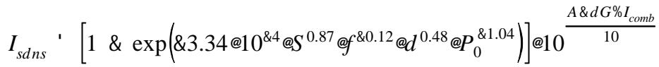
#368 text\mathrm{ P _ {0} } hệ số xuất hiện fade
#369 text^ { d \mathrm {G} } giá trị tuyệt đối của chênh lệch độ lợi ăng-ten chính và phân tập
#370 text\mathbf {A} biên dự phòng fade phẳng
#371 text\mathbf {S} khoảng cách dọc giữa ăng-ten chính và phân tập (m tâm đến tâm)
#372 textd chiều dài đường (km)
#373 text\mathrm {I} _ { \mathrm {c o m b} } độ lợi bộ kết hợp IF dB (0 cho các ứng dụng chuyển mạch băng gốc)
#374 textHệ số cải thiện phân tập không gian Vigants tương ứng được đưa ra bởi:
#375 textLuôn luôn thú vị khi so sánh các phương pháp khác nhau:
#376 interline_equation
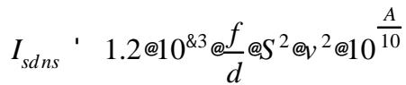
#377 textGiả sử độ lợi ăng-ten chính và phân tập bằng nhau dG = 0, v = 1 và \mathrm {I} _ { \mathrm {c o m b} } = 0 , một hệ thống với các tham số sau:
#378 text\mathrm{ P _ {0} } 1.62524
#379 textchiều dài đường 51.925 km
#380 texttần số 5.8825 GHz
#381 textS 18 mét
#382 textA 34.5 dB
#383 textsẽ tạo ra hệ số cải thiện phân tập không gian không chọn lọc là 37 khi sử dụng phương pháp ITU so với 124 đối với phương pháp Vigants. Ở đây, cùng một giá trị cho \mathrm{ P
#384 text_ { 0 } } được sử dụng cho cả hai phương pháp. Hệ số xuất hiện fade ITU có xu hướng nhỏ hơn nhiều so với Vigants và điều này có xu hướng bù đắp cho sự khác biệt. Xác suất ngừng hoạt động chọn lọc được tính như sau:
#385 textTính bình phương của hệ số tương quan không chọn lọc, \mathbf {k} _ { \mathrm {n s} }
#386 texttrong đó
#387 interline_equation
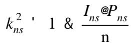
#388 text\mathrm{ { I _ {n s} } } hệ số cải thiện phân tập không gian không chọn lọc
#389 text\mathrm{ {\cal P} _ {n s} } xác suất ngừng hoạt động không chọn lọc
#390 textn hệ số hoạt động đa đường
#391 textTính bình phương của hệ số tương quan chọn lọc, {\bf k} _ { \mathrm {s} }
#392 textPathloss 4.0
#393 interline_equation
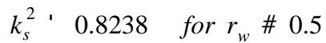
#394 interline_equation
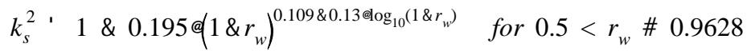
#395 interline_equation
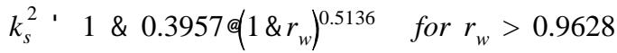
#396 interline_equation
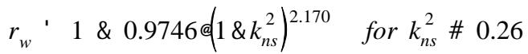
#397 interline_equation
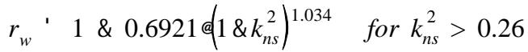
#398 textXác suất ngừng hoạt động chọn lọc được đưa ra bởi
#399 texttrong đó \mathrm {L} _ { \mathrm {c o m b} } là hệ số cải thiện chọn lọc do bộ kết hợp.
#400 interline_equation
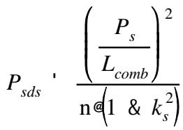
#401 textTổng xác suất ngừng hoạt động sau đó được đưa ra bởi P s d ~ ^ {\cdot} ~ \left( P _ {s d n s} ^ {0 . 7 5} ~ \% ~ P _ {s d s} ^ {0 . 7 5}\right) ^ { 1 . 3 3 }
#402 textCẢI THIỆN PHÂN TẬP TẦN SỐ
#403 titleCải thiện phân tập tần số không chọn lọc về cơ bản giống như công thức Vigants:
#404 textPhương pháp Vigants giả định rằng hệ số cải thiện này có giá trị cho các fade không chọn lọc và chọn lọc. Phương pháp ITU tính toán ngừng hoạt động chọn lọc chính xác như trong trường hợp phân tập không gian ở trên sử dụng \mathrm {I} _ { \mathrm {c o m b} } = 0 và \mathrm {L} _ { \mathrm {c o m b} } = 1 .
#405 interline_equation
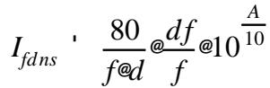
#406 textCẢI THIỆN PHÂN TẬP BỐN
#407 titleHệ số cải thiện phân tập bốn không chọn lọc là tổng của các hệ số phân tập không gian và tần số
#408 textBình phương của hệ số tương quan không chọn lọc được đưa ra bởi
#409 interline_equation
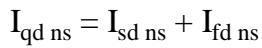
#410 textNgừng hoạt động chọn lọc được tính toán chính xác như trong trường hợp phân tập không gian sử dụng \mathrm{ I _ {c o m b} = 0 \ a n d L _ {c o m b} = 1 } cho các ứng dụng chuyển mạch băng gốc.
#411 interline_equation
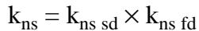
#412 textPathloss 4.0
#413 titleĐoạn này mô tả quy trình tính toán suy giảm ngưỡng do phân biệt phân cực chéo trên các đường vô tuyến hoạt động ở chế độ đồng kênh. XPD sẽ suy giảm trong điều kiện fading đa đường và mưa cường độ cao. Hoạt động đồng kênh được đặt bằng cách chọn Hoạt động - Độ tin cậy và sau đó chọn tùy chọn hoạt động đồng kênh. Dữ liệu được truy cập bằng cách chọn Hoạt động - Nhiễu XPD Đồng kênh.
#414 table
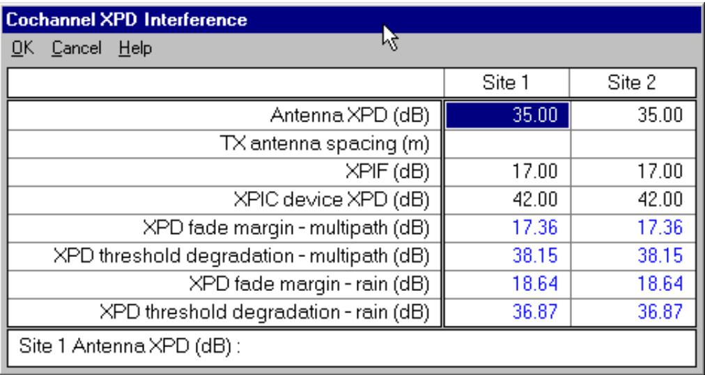
#415 textSUY GIẢM XPD DO ĐA ĐƯỜNG
#416 title1. Tính toán
#417 titletrong đó X P D _ { \mathrm {g} } là giá trị tối thiểu của XPD ăng-ten phát và thu được đo trên hướng ngắm.
#418 interline_equation
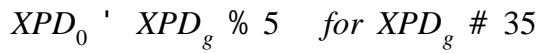
#419 interline_equation
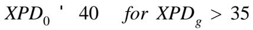
#420 text2 Tính tham số hoạt động đa đường
#421 titletrong đó P _ {0} là hệ số xuất hiện đa đường tương ứng với phần trăm thời gian mà fade lớn hơn 0 dB xảy ra trong tháng xấu nhất trung bình.
#422 interline_equation
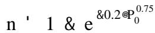
#423 text3 Tính toán
#424 titlePathloss 4.0
#425 interline_equation
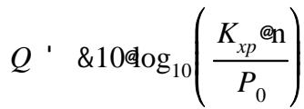
#426 textK _ { _ { X P } } \ ^ { , } \quad0 . 7 cho một ăng-ten phát
#428 text\frac{ S _ {t} } { \ddot{ \mathrm {e} } } \right) ^ { 2 } \right] \quad\mathrm {f o r ~ t w o ~ t r a n s m i t ~ a n t e n n a s} Tính toán
#429 textTỷ lệ sóng mang trên nhiễu đồng kênh sau đó được đưa ra bởi:
#430 interline_equation
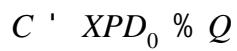
#431 textcho các máy vô tuyến không được trang bị thiết bị XPIC và bằng phương trình sau cho các máy vô tuyến được trang bị XPIC..
#432 interline_equation
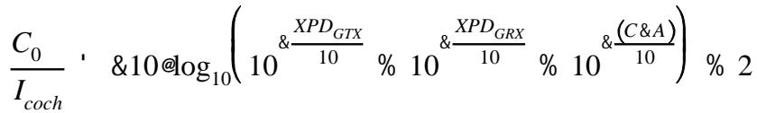
#433 texttrong đó
#434 interline_equation
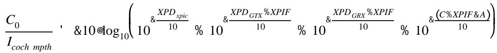
#435 textXPIF là cải thiện do thiết bị XPIC
#436 text\mathrm {X P D} _ { \mathrm {G} } là phân biệt phân cực chéo của các ăng-ten
#437 text\mathrm{ { X P D } _ { \mathrm{ { x p i c } } } } là XPD của thiết bị XPIC
#438 textA là biên dự phòng fade bao gồm ảnh hưởng của nhiễu do các máy phát khác
#439 textCải thiện 2 dB trong trường hợp không có XPIC là do các đặc tính Gaussian của tín hiệu phân cực chéo gây nhiễu. Con số này được bao gồm trong XPIF cho các máy vô tuyến được trang bị XPIC.
#440 textSuy giảm XPD do Mưa
#441 textHệ số giảm XPD do mưa cường độ cao được đưa ra bởi phương trình
#442 textTỷ lệ sóng mang trên nhiễu đồng kênh tương ứng sau đó được đưa ra bởi: